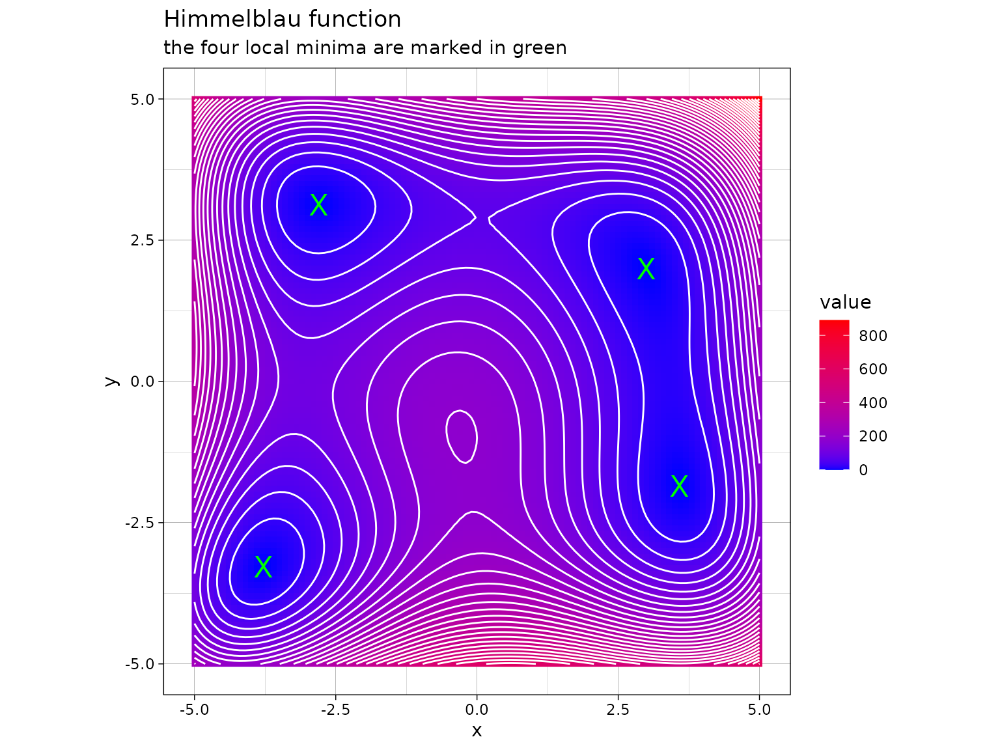
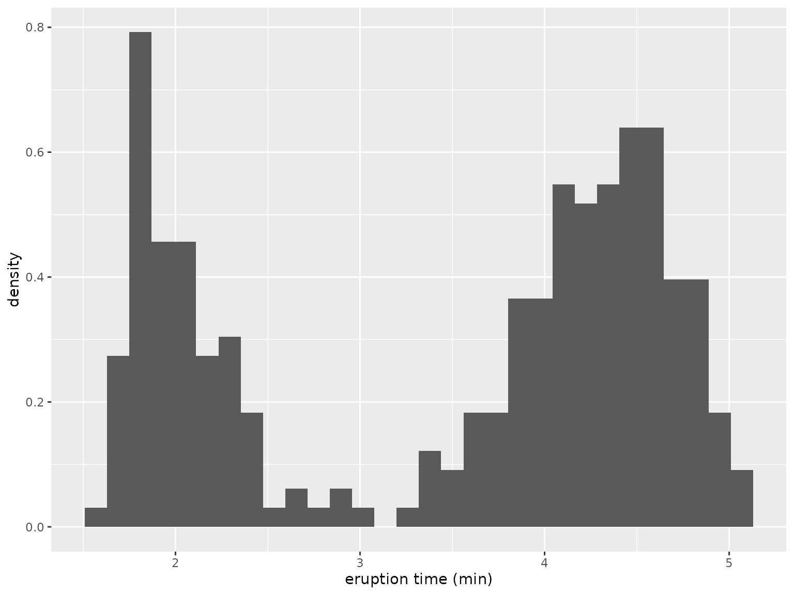

The ao R package implements the alternating optimization (AO) approach. This vignette provides an overview of the package. For theoretical results on AO, refer to:
Bezdek and Hathaway (2002), who explain how AO can avoid getting stuck in local optima
Hu and Hathaway (2002), who show that AO can speed up optimization
Bezdek and Hathaway (2003), who provide more details on the convergence speed of AO
What actually is alternating optimization?
Alternating optimization (AO) is an iterative procedure used to optimize a multivariate function by breaking it down into simpler sub-problems. It involves optimizing over one block of function parameters while keeping the others fixed, and then alternating this process among the parameter blocks. AO is particularly useful when the sub-problems are easier to solve than the original joint optimization problem, or when there is a natural partition of the parameters.
Mathematically, consider a real-valued objective function where and are two blocks of function parameters, namely a partition of the parameters. The AO procedure can be described as follows:
Initialization: Start with initial guesses and .
-
Iterative Steps: For
- Step 1: Fix and solve the sub-problem
- Step 2: Fix and solve the sub-problem
Convergence: Repeat the iterative steps until a convergence criterion is met, such as when the change in the objective function or the parameters falls below a specified threshold, or when a pre-defined iteration limit is reached.
The AO procedure can be
viewed as a generalization of joint optimization, where the parameter partition is trivial, consisting of the entire parameter vector as a single block,
also used for maximization problems by simply replacing by above,
generalized to more than two parameter blocks, i.e., for , the procedure involves cycling through each parameter block and solving the corresponding sub-problems iteratively (the parameter blocks do not necessarily have to be disjoint),
randomized by changing the parameter partition randomly after each iteration, which can further improve the convergence rate and help avoid getting trapped in local optima (Chib and Ramamurthy 2010),
run in multiple threads for different initial values, parameter partitions, and/or base optimizers.
Now how to use the {ao} package?
The ao package offers the function ao(),
which can be used to perform different variants of alternating
optimization.
The function call
The ao() function call with the default arguments looks
as follows:
ao(
f,
initial,
target = NULL,
npar = NULL,
gradient = NULL,
...,
partition = "sequential",
new_block_probability = 0.5,
minimum_block_number = 2,
minimize = TRUE,
lower = -Inf,
upper = Inf,
iteration_limit = Inf,
seconds_limit = Inf,
tolerance_value = 1e-6,
tolerance_parameter = 1e-6,
tolerance_parameter_norm = function(x, y) sqrt(sum((x - y)^2)),
tolerance_history = 1,
base_optimizer = Optimizer$new("stats::optim", method = "L-BFGS-B"),
verbose = FALSE,
hide_warnings = TRUE
)The arguments have the following meaning:
f: The objective function to be optimized. By default,fis optimized over its first argument. If optimization should target a different argument or multiple arguments, usenparandtarget, see below. Additional arguments forfcan be passed via the...argument as usual.initial: Initial values for the parameters used in the AO procedure.gradient: Optional argument to specify the analytical gradient off. If not provided, a finite-difference approximation will be used.-
partition: Specifies how parameters are partitioned for optimization. Can be one of the following:"sequential": Optimizes each parameter block sequentially."random": Randomly partitions parameters in each iteration."none": No partitioning; equivalent to joint optimization.Custom partition can be defined using a list of vectors of parameter indices.
new_block_probabilityandminimum_block_numberare only relevant ifpartition = "random". In this case, the former controls the probability for creating a new block, and the latter defines the minimum number of parameter blocks.minimize: Set toTRUEfor minimization problems (default), orFALSEfor maximization.lowerandupper: Lower and upper limits for constrained optimization.iteration_limitis the maximum number of AO iterations before termination, whileseconds_limitis the time limit in seconds.tolerance_valueandtolerance_parameter(in combination withtolerance_parameter_norm) specify two other stopping criteria, namely when the difference between the current function value or the current parameter vector and the one beforetolerance_historyiterations, respectively, becomes smaller than these thresholds.base_optimizer: Numerical optimizer used for solving sub-problems.Set
verbosetoTRUEto print status messages, andhide_warningstoFALSEto show warning messages during the AO process.
A simple first example
The following is an implementation of the Himmelblau’s function
himmelblau <- function(x) (x[1]^2 + x[2] - 11)^2 + (x[1] + x[2]^2 - 7)^2This function has four identical local minima, for example in and :
himmelblau(c(3, 2))
#> [1] 0
Minimizing Himmelblau’s function through alternating minimization for and with initial values can be accomplished as follows:
ao(f = himmelblau, initial = c(0, 0))
#> $estimate
#> [1] 3.584428 -1.848126
#>
#> $value
#> [1] 9.606386e-12
#>
#> $details
#> iteration value p1 p2 b1 b2 seconds
#> 1 0 1.700000e+02 0.000000 0.000000 0 0 0.000000000
#> 2 1 1.327270e+01 3.395691 0.000000 1 0 0.018008232
#> 3 1 1.743664e+00 3.395691 -1.803183 0 1 0.003805161
#> 4 2 2.847290e-02 3.581412 -1.803183 1 0 0.003932714
#> 5 2 4.687468e-04 3.581412 -1.847412 0 1 0.003320694
#> 6 3 7.368057e-06 3.584381 -1.847412 1 0 0.002850771
#> 7 3 1.164202e-07 3.584381 -1.848115 0 1 0.022559643
#> 8 4 1.893311e-09 3.584427 -1.848115 1 0 0.002321720
#> 9 4 9.153860e-11 3.584427 -1.848124 0 1 0.001801968
#> 10 5 6.347425e-11 3.584428 -1.848124 1 0 0.001797199
#> 11 5 9.606386e-12 3.584428 -1.848126 0 1 0.001785517
#>
#> $seconds
#> [1] 0.06218362
#>
#> $stopping_reason
#> [1] "change in function value between 1 iteration is < 1e-06"Here, we see the output of the alternating optimization procedure,
which is a list that contains the following elements:
estimateis the parameter vector at termination.valueis the function value at termination.detailsis adata.framewith full information about the procedure: For each iteration (columniteration) it contains the function value (columnvalue), parameter values (columns starting withpfollowed by the parameter index), the active parameter block (columns starting withbfollowed by the parameter index, where1stands for a parameter contained in the active parameter block and0if not), and computation times in seconds (columnseconds).secondsis the overall computation time in seconds.stopping_reasonis a message why the procedure has terminated.
Using the analytical gradient
For the Himmelblau’s function, it is straightforward to define the analytical gradient as follows:
gradient <- function(x) {
c(
4 * x[1] * (x[1]^2 + x[2] - 11) + 2 * (x[1] + x[2]^2 - 7),
2 * (x[1]^2 + x[2] - 11) + 4 * x[2] * (x[1] + x[2]^2 - 7)
)
}The gradient function will be used by ao() if defined
through the gradient argument as follows:
The output is not shown here because it closely resembles the previous example, where the gradient was not specified and thus a finite-difference approximation was employed. However, in scenarios involving higher dimensions, utilizing the analytical gradient can notably improve both the speed and stability of the process.
Random parameter partitions
Another version of the AO procedure involves using a new, random
partition of the parameters in every iteration. This approach can
enhance the convergence rate and prevent being stuck in local optima. It
is activated by setting partition = "random". The
randomness can be adjusted using two parameters:
new_block_probabilitydetermines the probability for creating a new block when building a new partition. Its value ranges from0(no blocks are created) to1(each parameter is a single block).minimum_block_numbersets the minimum number of parameter blocks for random partitions. By default, it is configured to2to avoid generating trivial partitions.
The random partitions are build as follows:1
procedure <- ao:::Procedure$new(
npar = 10,
partition = "random",
new_block_probability = 0.5,
minimum_block_number = 2
)
procedure$get_partition()
#> [[1]]
#> [1] 5
#>
#> [[2]]
#> [1] 1 6 9
#>
#> [[3]]
#> [1] 10
#>
#> [[4]]
#> [1] 7
#>
#> [[5]]
#> [1] 4 8
#>
#> [[6]]
#> [1] 2 3
procedure$get_partition()
#> [[1]]
#> [1] 1 7 8
#>
#> [[2]]
#> [1] 6 10
#>
#> [[3]]
#> [1] 3 4
#>
#> [[4]]
#> [1] 2
#>
#> [[5]]
#> [1] 9
#>
#> [[6]]
#> [1] 5As an example of AO with random partitions, consider fitting a two-class Gaussian mixture model via maximizing the model’s log-likelihood function
where the sum goes over all observations , and denote the normal density for the first and second cluster, respectively, and is the mixing proportion. The parameter vector to be estimated is thus . As there exists no closed-form solution for the maximum likelihood estimator , we need numerical optimization for finding the function optimum. The model is fitted to the following data:2

The following function calculates the log-likelihood value given the
parameter vector theta and the observation vector
data:3
normal_mixture_llk <- function(theta, data) {
mu <- theta[1:2]
sd <- exp(theta[3:4])
lambda <- plogis(theta[5])
c1 <- lambda * dnorm(data, mu[1], sd[1])
c2 <- (1 - lambda) * dnorm(data, mu[2], sd[2])
sum(log(c1 + c2))
}The ao() call for performing alternating
maximization with random partitions looks as follows, where we
simplified the output for brevity:
out <- ao(
f = normal_mixture_llk,
initial = runif(5),
data = datasets::faithful$eruptions,
partition = "random",
minimize = FALSE
)
round(out$details, 2)
#> iteration value p1 p2 p3 p4 p5 b1 b2 b3 b4 b5 seconds
#> 1 0 -713.98 0.94 0.79 0.97 0.35 0.50 0 0 0 0 0 0.00
#> 2 1 -541.18 0.94 3.81 0.97 0.35 0.50 0 1 0 0 0 0.00
#> 3 1 -512.65 0.94 3.81 0.66 -0.30 0.50 0 0 1 1 0 0.01
#> 4 1 -447.85 3.08 3.81 0.66 -0.30 0.50 1 0 0 0 0 0.00
#> 5 1 -445.29 3.08 3.81 0.66 -0.30 -0.04 0 0 0 0 1 0.00
#> 6 2 -432.41 3.08 4.23 0.66 -0.30 -0.04 0 1 0 0 0 0.00
#> 7 2 -277.05 2.02 4.23 -1.46 -0.81 -0.63 1 0 1 1 1 0.03
#> 8 3 -276.39 2.02 4.27 -1.46 -0.81 -0.63 0 1 0 0 1 0.01
#> 9 3 -276.36 2.02 4.27 -1.45 -0.83 -0.63 1 0 1 1 0 0.01
#> 10 4 -276.36 2.02 4.27 -1.45 -0.83 -0.63 0 0 1 0 0 0.01
#> 11 4 -276.36 2.02 4.27 -1.45 -0.83 -0.63 1 1 0 1 1 0.01
#> 12 5 -276.36 2.02 4.27 -1.45 -0.83 -0.63 1 0 0 0 0 0.00
#> 13 5 -276.36 2.02 4.27 -1.45 -0.83 -0.63 0 1 1 1 1 0.01
#> 14 6 -276.36 2.02 4.27 -1.45 -0.83 -0.63 0 0 0 0 1 0.00
#> 15 6 -276.36 2.02 4.27 -1.45 -0.83 -0.63 1 1 1 1 0 0.01
#> 16 7 -276.36 2.02 4.27 -1.45 -0.83 -0.63 1 1 0 1 1 0.01
#> 17 7 -276.36 2.02 4.27 -1.45 -0.83 -0.63 0 0 1 0 0 0.00
#> 18 8 -276.36 2.02 4.27 -1.45 -0.83 -0.63 1 1 0 1 1 0.00
#> 19 8 -276.36 2.02 4.27 -1.45 -0.83 -0.63 0 0 1 0 0 0.00More flexibility
The ao package offers some flexibility for performing AO.4
Generalized objective functions
Optimizers in R generally require that the objective function has a
single target argument which must be in the first position.
ao allows for optimization over an argument other than
the first, or more than one argument. For example, say, the
normal_mixture_llk function above has the following form
and is supposed to be optimized over the parameters mu,
sd, and lambda:
normal_mixture_llk <- function(data, mu, sd, lambda) {
sd <- exp(sd)
lambda <- plogis(lambda)
c1 <- lambda * dnorm(data, mu[1], sd[1])
c2 <- (1 - lambda) * dnorm(data, mu[2], sd[2])
sum(log(c1 + c2))
}In ao(), this scenario can be specified by setting
target = c("mu", "sd", "lambda")(the names of the target arguments)and
npar = c(2, 2, 1)(the lengths of the target arguments):
Parameter bounds
Instead of using parameter transformations in the
normal_mixture_llk() function above, parameter bounds can
be directly specified in ao() via the arguments
lower and upper, where both can either be a
single number (a common bound for all parameters) or a vector of
specific bounds per parameter. Therefore, an more straightforward
implementation of the mixture example would be:
normal_mixture_llk <- function(mu, sd, lambda, data) {
c1 <- lambda * dnorm(data, mu[1], sd[1])
c2 <- (1 - lambda) * dnorm(data, mu[2], sd[2])
sum(log(c1 + c2))
}
ao(
f = normal_mixture_llk,
initial = runif(5),
target = c("mu", "sd", "lambda"),
npar = c(2, 2, 1),
data = datasets::faithful$eruptions,
partition = "random",
minimize = FALSE,
lower = c(-Inf, -Inf, 0, 0, 0),
upper = c(Inf, Inf, Inf, Inf, 1)
)Custom parameter partition
ao allows for the specification of custom parameter partitions. For example, say, the parameters of the Gaussian mixture model are supposed to be grouped by type:
In ao(), custom parameter partitions can be specified by
setting partition = list(1:2, 3:4, 5), i.e. by defining a
list where each element corresponds to a parameter block,
containing a vector of parameter indices. Parameter indices can be
members of any number of blocks.
Stopping criteria
Currently, four different stopping criteria for the AO procedure are implemented:
a predefined iteration limit is exceeded (via the
iteration_limitargument)a predefined time limit is exceeded (via the
seconds_limitargument)the absolute change in the function value in comparison to the last iteration falls below a predefined threshold (via the
tolerance_valueargument)the change in parameters in comparison to the last iteration falls below a predefined threshold (via the
tolerance_parameterargument, where the parameter distance is computed via the norm specified astolerance_parameter_norm)
Any number of stopping criteria can be activated or deactivated5, and the final output contains information about the criterium that caused termination.
Optimizer for solving the sub-problems
By default, the L-BFGS-B algorithm (Byrd et al. 1995) implemented in
stats::optim is used. for solving the sub-problems
numerically. However, any other optimizer can be selected by specifying
the base_optimizer argument. Such an optimizer must be
defined through the framework provided by the optimizeR
package, please see its
documentation for details. For example, the stats::nlm
optimizer can be selected by setting
base_optimizer = Optimizer$new("stats::nlm").
Multiple threads
Alternating optimization can suffer from local optima. To increase the likelihood of reaching the global optimum, users can specify
multiple starting parameters,
multiple parameter partitions,
multiple base optimizers.
Use the initial, partition, and/or
base_optimizer arguments to provide a list of
possible values for each parameter. Each combination of initial values,
parameter partitions, and base optimizers will create a separate
alternating optimization thread.
In the case of multiple threads, the output changes slightly in
comparison to the standard case. It is still a list with
the following elements:
estimateis the optimal parameter vector over all threads.valueis the optimal function value over all threads.detailscombines details of the single threads and has an additional columnthreadwith an index for the different threads.secondsgives the computation time in seconds for each thread.stopping_reasongives the termination message for each thread.threadsgive details how the different threads were specified.
By default, threads run sequentially. However, since they are
independent, they can be parallelized. To enable parallel computation,
use the {future}
framework. For example, run the following before the
ao() call:
future::plan(future::multisession, workers = 4)When using multiple threads, setting verbose = TRUE to
print tracing details during alternating optimization is not supported.
However, progress of threads can still be tracked using the {progressr}
framework. For example, run the following before the
ao() call:
progressr::handlers(global = TRUE)
progressr::handlers(
progressr::handler_progress(":percent :eta :message")
)